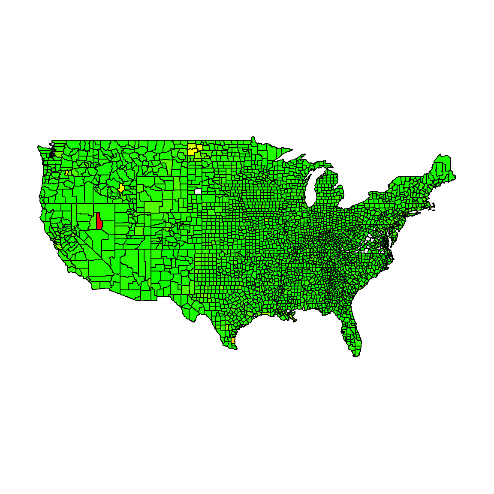

U.S. GDP
Kevin Wright
2019-04-16
gdp_by_county.RmdThe data for this exercise was found here: https://www.bea.gov/news/2018/prototype-gross-domestic-product-county-2012-2015
There are a couple of Excel spreadsheets to choose from. We chose the “Data Table for GDP by County”. The data was downloaded 16 Apr 2019 from: https://www.bea.gov/system/files/2018-12/GCP_Release_1.xlsx.
Here’s a screenshot of the file open in Excel.

library(untidydata2)
library(readxl)
datfile <- system.file("messydata", "gdp_by_county.xlsx", package="untidydata2")
dat <- read_excel(datfile, "Current Dollar GDP")
#> New names:
#> * `` -> ...7
#> * `` -> ...8
#> * `` -> ...9The Excel file has mutliple header rows. Based on a little experimentation, we drop the first two rows and manually assign column names.
dat <- dat[-c(1:2),]
names(dat) <- c("fips","county","state","item","sector","gdp2012","gdp2013","gdp2014","gdp2015")
head(dat)
#> # A tibble: 6 x 9
#> fips county state item sector gdp2012 gdp2013 gdp2014 gdp2015
#> <chr> <chr> <chr> <dbl> <chr> <chr> <chr> <chr> <chr>
#> 1 01001 Autauga AL 1 All Industries 1383941 1363368 1402516 1539406
#> 2 01001 Autauga AL 2 Private goods-~ 286396 310468 323582 346355
#> 3 01001 Autauga AL 3 Private servic~ 948490 904599 928438 1037309
#> 4 01001 Autauga AL 4 Government and~ 149055 148301 150496 155742
#> 5 01003 Baldwin AL 1 All Industries 5599194 6365080 6547396 6436107
#> 6 01003 Baldwin AL 2 Private goods-~ 681871 698500 711443 735432I usually check the tail of a dataset, and in this case there are several blank rows. Looking in the Excel file, we learn that these are a couple of footnotes. We need to omit those rows.
# tail(dat)
library(dplyr)
#>
#> Attaching package: 'dplyr'
#> The following objects are masked from 'package:stats':
#>
#> filter, lag
#> The following objects are masked from 'package:base':
#>
#> intersect, setdiff, setequal, union
dat <- filter(dat, !is.na(state))Gather the GDP columns into a single column.
library(tidyr)
dat <- gather(dat, key, value, gdp2012:gdp2015)
dat <- mutate(dat, value=as.numeric(value)) # note, "(D)"
#> Warning: NAs introduced by coercion
dat <- mutate(dat, year=readr::parse_number(key)) # extract year
dat <- select(dat, -key, -item)
dat <- mutate(dat, year=as.character(year)) # so 'spread' will treat it as ID
dat <- spread(dat, sector, value) # turn sector column into multiple columns
dat <- rename(dat, all="All Industries", govt="Government and government enterprises",
goods="Private goods-producing industries", service="Private services-providing industries")library(maps)
library(dplyr)
library(plotrix) # for color.scale
data(county.fips)
# fips polyname
# 1 1001 alabama,autauga
# 2 1003 alabama,baldwin
# now add the gdp data (from the right) to make sure color code is ordered
# in the right way
#dat <- mutate(dat, fips=as.numeric(fips))
#fipsdat <- left_join(county.fips, dat, by='fips')
#fipsdat$col = plotrix::color.scale(log(fipsdat$govt), c(0,1,1),c(1,1,0),0)
#map("county", fill=TRUE, col=fipsdat$col)
# get the names of the polygons used by map
nms <- map("county", plot=FALSE, namesonly=TRUE)
polys <- data.frame(polyname=nms)
polys <- mutate(polys, polyname = as.character(polyname))
# add the fips code
polys <- left_join(polys, county.fips )
#> Joining, by = "polyname"
# add the 2015 gdp data by fips
dat = mutate(dat, fips=as.numeric(fips))
polys <- left_join(polys, filter(dat, year==2015), by="fips")
# add population
data(unemp)
polys <- left_join(polys, unemp, by="fips")
# gdp per pop
polys <- mutate(polys, gdpperpop=all/pop)
# calcualte color for each polygon
polys <- mutate(polys,
col = plotrix::color.scale(gdpperpop, c(0,1,1),c(1,1,0),0))
map("county", fill=TRUE, col=polys$col)
Unfortunately, there’s no scale shown. The colors are horrible. Nothing interesting in this view.
NEEDS WORK.